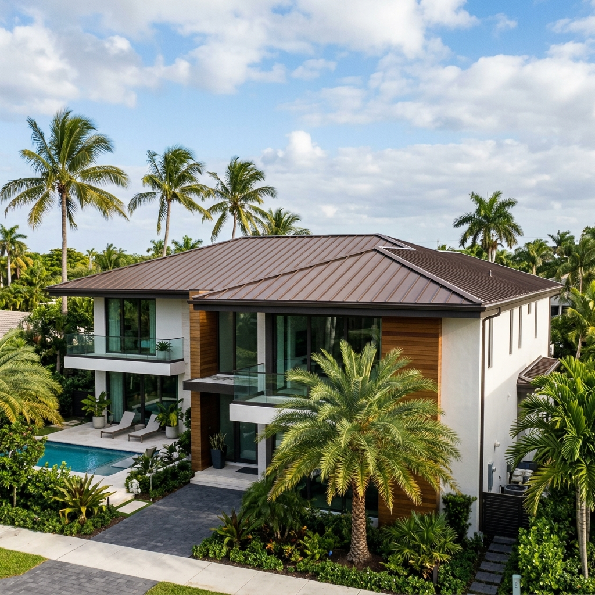

Published by Planet Roofing | Fort Lauderdale Roofing Contractor
In today’s evolving roofing industry, metal roofing is taking center stage as a leader in durability, energy savings, and sustainability. More than just a roof, it represents a forward-thinking investment in style, performance, and green energy—ideal for modern homeowners who care about both curb appeal and long-term environmental impact. In South Florida's warm climate, upgrading to a high-quality metal system helps mitigate high utility costs and reinforces your home against severe tropical weather threats.

Understanding Metal Roofing Material Properties
Metal roofing systems are engineered using highly durable, lightweight alloys that place significantly less structural stress on your home than concrete tiles. The two most common designs are standing seam panels, which feature concealed mechanical fasteners to prevent water leaks, and exposed fastener panels. Homeowners can select from structural steel, marine-grade aluminum, or stone-coated steel profiles that mirror Mediterranean clay tile or natural wood shake. The raw metal is coated with protective zinc or aluminum alloys and finished with high-performance fluoropolymer resins that resist corrosion from coastal salt air.
Pros & Cons of Metal Roofing
When evaluating a major upgrade to your Broward County property, it is important to analyze both the operational advantages and the initial installation factors:
- Pros: Reflective Cool Roofing: Metal surfaces naturally reflect solar radiation, keeping attics cooler and decreasing standard air conditioning usage.
- Pros: Multi-Decade Longevity: While standard asphalt shingles last fifteen to twenty years, metal roofs routinely perform reliably for fifty years or longer.
- Pros: Solar Panel Compatibility: Solar racking systems can be clamped directly onto standing seams without making any penetrations in the roof deck.
- Cons: Higher Upfront Cost: The initial capital investment for metal is higher than asphalt shingles, requiring a longer-term financial outlook to realize full return on investment.
- Cons: Skilled Labor Required: Precision bending, flashing, and sealing require specialized installation crews to prevent future leaks at seams and valleys.
Wind & Heat Resistance Ratings
In South Florida's High Velocity Hurricane Zone (HVHZ), wind and heat performance are tightly regulated. Standing seam metal roof installations are tested to withstand wind speeds up to 180 mph, easily exceeding strict Miami-Dade building code requirements. For heat resistance, cool metal roofs are painted with PVDF coatings containing highly reflective ceramic pigments. This technology yields a Solar Reflectance Index (SRI) over 78, allowing the roof to shed up to 70% of solar heat gain. By keeping the decking cooler, your HVAC system operates more efficiently during the peak summer months.
Solar Integration & Green Energy Synergy
A metal roof acts as the ultimate foundation for home solar energy systems. Traditional roofs require solar installers to drill dozens of holes into the shingles and plywood to mount the panels, creating potential leak points. With standing seam metal roofing, specialized aluminum clamps grip the vertical ribs of the panels. This non-invasive mounting method preserves the structural integrity of your roof and ensures your manufacturer leak warranty remains completely intact while generating clean, sustainable power.
Warranty Considerations
A durable metal roof is supported by two distinct levels of warranty protection. The first is the manufacturer's finish warranty, which covers premium PVDF/Kynar 500 coatings against fading, chalking, or peeling for up to 40 years. The second is the contractor's workmanship warranty, which covers the structural installation, flashings, and leak-proof performance. Homeowners should always partner with factory-certified contractors who can offer extended warranties that protect both the materials and the labor for decades.
Maintenance & Cleaning Schedule
Although metal roofs are incredibly low-maintenance compared to wood or shingle systems, following a regular inspection schedule ensures maximum longevity in our humid, salty South Florida air:
- Annual Spring Inspections: Conduct a visual check every spring to clear valleys of tree limbs and inspect the perimeter trim before the heavy summer rain season.
- Salt and Debris Washdown: Gently rinse the panels with clean water once a year, especially if you live within a few miles of the ocean, to prevent salt accumulation.
- Gasket and Sealant Audits: Have a certified roofer inspect structural fasteners and rubber pipe boots every five to seven years to ensure seal integrity.
Choose Strength. Choose Style. Choose Sustainability.
Call Planet Roofing today for metal roofing, roof replacement, roof repair, and energy-efficient roofing options in Fort Lauderdale and South Florida.
Phone: (954) 600-1462 | Website: planetroofingfl.com
Frequently Asked Questions
How much does a metal roof installation cost in Broward County?
The initial cost of installing a metal roof in South Florida ranges from $15,000 to over $35,000, depending on the material (aluminum or steel) and the roof layout. While the upfront investment is higher than shingles, the long-term energy savings and durability make it highly cost-effective over its lifespan.
When should homeowners install solar panels on a metal roof?
The most efficient time to install solar panels is immediately after the metal roof installation is completed. Installing solar on a fresh roof ensures both systems have matching multi-decade lifespans, and the mounting process will not require penetrating the water-tight roof deck.
Is a professional installer required for Kynar coated metal roofing?
Yes. Specialized training is required to handle, cut, and install standing seam panels and PVDF/Kynar-finished metal systems. DIY attempts can void the material warranty, scratch the protective coating, and lead to leaks at the critical eave and valley flashings.
Does a metal roof help lower utility bills in South Florida's climate?
Yes. High-quality metal roofs reflect up to 70% of solar heat, keeping attic spaces significantly cooler. Homeowners in Broward County often see cooling energy savings of 20% to 40% when transitioning from traditional dark asphalt shingles.
Why should a metal roof contractor hold a certified roofing license?
In Florida, metal roofing installations must comply with strict High Velocity Hurricane Zone (HVHZ) requirements. A certified roofing contractor (with a CCC license number) understands these building codes, holds the necessary liability insurance, and pulls the proper municipal permits to ensure code-compliant work.